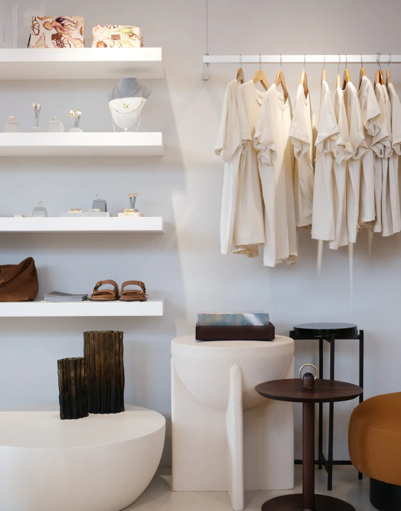
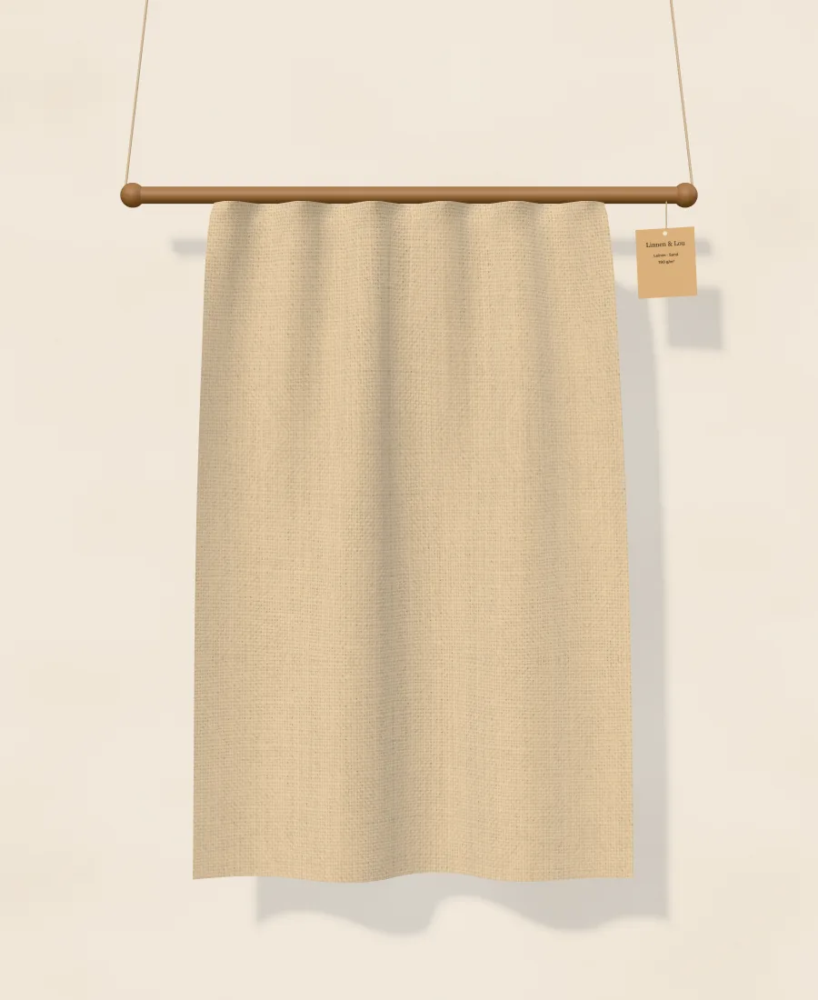
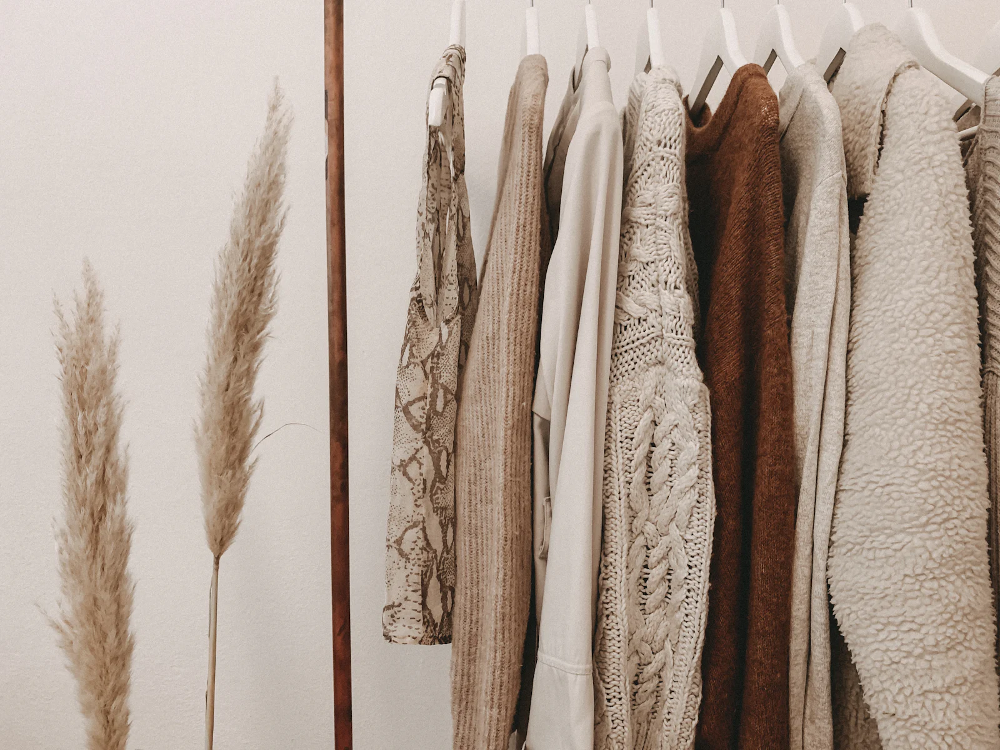
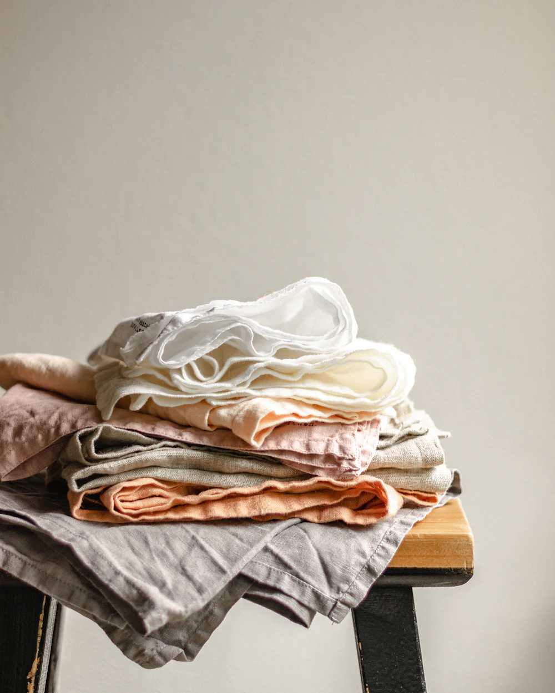

Boutique · Eppendorf
Leinen,
das bleibt.
Kleidung aus europäischem Leinen, genäht in kleinen Werkstätten. Zum Anfassen, zum Anprobieren und zum lange Tragen.
- Leinenaus Belgien und Litauen
- Genähtin Porto, in kleinen Serien
- Reparaturim ersten Jahr kostenlos
Der Stoff
Fühlen Sie mal.
Unser Leinen ist dichter gewebt als üblich und wird mit jedem Waschen weicher. Greifen Sie hinein, ziehen Sie am Stoff und sehen Sie, wie er fällt.

Am Stoff ziehen
Lookbook Herbst
Naturtöne, zum Kombinieren.
Tippen Sie auf die Punkte: Alles auf der Stange hängt so bei uns im Laden.

Neu im Laden
Hemden für den ganzen Sommer.
Merken Sie sich Ihre Größe vor, wir legen alles in der Kabine bereit. Reserviert ist für drei Tage, bezahlt wird erst im Laden.

Warum Leinen
Ein Stoff, der mit Ihnen älter wird.
- 01
Wenig Wasser
Flachs wächst in Europa ohne künstliche Bewässerung, fast die ganze Pflanze wird verwendet.
- 02
Wird weicher
Leinen kühlt im Sommer, wärmt in der Übergangszeit und wird mit jedem Waschen schöner.
- 03
Hält Jahrzehnte
Und wenn doch mal eine Naht aufgeht: Im ersten Jahr reparieren wir kostenlos.
Besuch
Zwei Kabinen, viel Tageslicht.
Anprobieren geht ohne Termin. Wer vorher reserviert, findet seine Größen schon in der Kabine.
- Adresse
- Eppendorf, 20249 Hamburg
- Anfahrt
- U1 bis Klosterstern oder U3 bis Eppendorfer Baum
- Telefon
- 040 000 000 00
Öffnungszeiten
| Dienstag bis Freitag | 11 – 19 Uhr |
|---|---|
| Samstag | 10 – 16 Uhr |
| Sonntag und Montag | geschlossen |